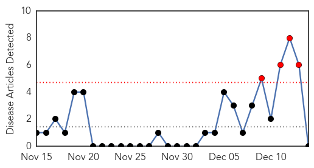

Pertussis
30-Day Web Trend
4 alerts, 0 warnings

30-Day Twitter Trend
0 alerts, 0 warnings

Article Locations

Article Confidences

Top Articles:
-
No articles found for Dec 14, 2014
Top Tweets:
-
No tweets found for Dec 14, 2014
Unknown
30-Day Web Trend
0 alerts, 0 warnings

30-Day Twitter Trend
0 alerts, 0 warnings

Article Locations
Article Confidences

Top Articles:
- 0.996
- Flu cases climb in Dallas County
- 0.993
- GABON: Typhoid outbreak extends to capital hit by water supply problems
- 0.917
- Chicago Tribune
- 0.917
- Chicago Tribune
- 0.915
- Increased Norovirus Activity Noted in New Mexico
- 0.910
- The world windows to Thailand
- 0.910
- The world windows to Thailand
- 0.910
- The world windows to Thailand
- 0.866
- Libya's Es Sider oil export port closed due to clashes -oil official
- 0.866
- Turkish police raid newspaper close to U.S.-based cleric Gulen
- 0.707
- Brazil: Enterovirus outbreak closes hospital NICU
- 0.702
- Rural Industries Research and Development Corporation)
- 0.688
- 10 Facts About Fluoride You Need to Know
- 0.674
- Save water to save ourselves
- 0.652
- NIH receives 867 samples from K-P in 10 months
- 0.616
- Eight purpose-built mobile medical clinics arrive in Erbil - Iraq
- 0.580
- Hospitals out of drugs
- 0.552
- Australians too relaxed about bat virus
- 0.510
- USAID Administrator Shah Announces $2 Million Collaboration with Partners in Health Local Haitian Affiliate Zanmi Lasante
Top Tweets:
- 0.760
- Fue consumió un depósito de materiales de limpieza en Caaguazú: Un incendio de grandes proporciones se decla... http://t.co/lPnjM8GGG1
- 0.718
- luego de unos pancakes y fresas un roadtrip suena genial üåªüçÉ
- 0.595
- RT: FLU SCAN: Flu vaccine impact in 2013-14; Avian flu in British Columbia; H7N9 severity http://t.co/R329b6jEZk
- 0.538
- Me encanta cuando hablan de ciencia en las predicaciones evangélicas.